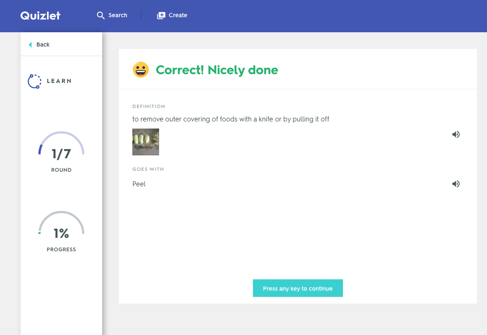
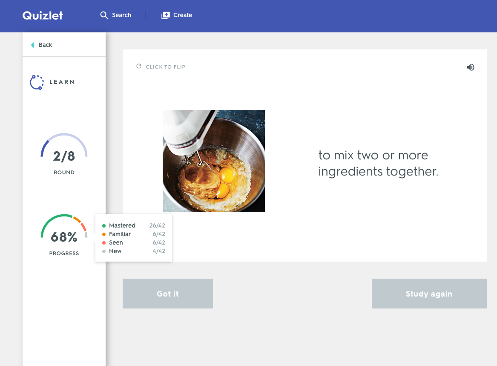
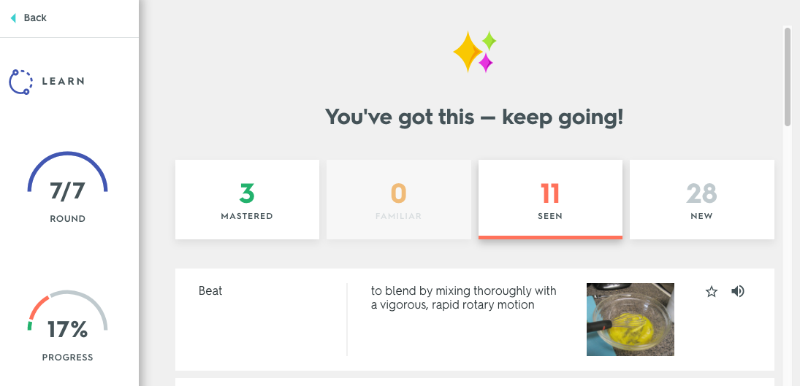

The New Quizlet Learn — now available on the Quizlet website, iOS and Android apps — takes the guesswork out of studying by creating a personalized study plan based on your familiarity with the set and guiding you to mastery.
Learn will quiz you with different types of questions including flashcards, true/false, multiple choice and written. As you begin to progress and answer questions correctly more consistently, Learn will advance you from easier questions (true/false and multiple choice) to harder ones (written).
To customize your Learn session, open the Options menu. From there, you can select which side you'd like to be prompted with, choose to study only your starred terms, turn audio on and off and select the types of questions you'd like to see.
For true/false and multiple choice questions, select an answer and Quizlet will tell you if it was right or wrong. For flashcard questions, select Got it for terms you know and select Study again for terms you don't. To move to the next question, press any key to continue.
For written questions, type in an answer and press Enter or select Answer. Quizlet will tell you if it was right or wrong. If you're not sure of an answer, you can select Don't know? to view the correct answer and copy it before moving on to the next question.
The next time you see the same question, you'll see the option to Reveal the answer to view a hint. Once you begin typing an answer, the hint will be blurred out and you can select the term to bring the hint back.
Your progress percentage will increase as you master the terms in your set. You can view your progress at each checkpoint and your overall progress on the left sidebar. If you hover over your Overall progress, you can view how many terms you have in each level of mastery — new, seen, familiar and mastered.
After each round, you'll see all the terms grouped by level of mastery — mastered, almost done, in progress and new. Select the mastery level buttons at the top of the round results to see which terms are in each group. Select Continue to keep studying.
Once you've mastered all of the terms in your set, you can either select Review to keep studying to make sure everything sticks or select Finish to end your session and return to the set page.